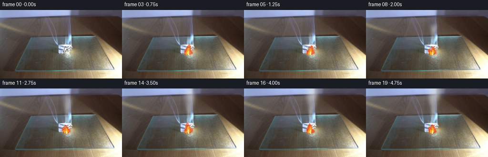
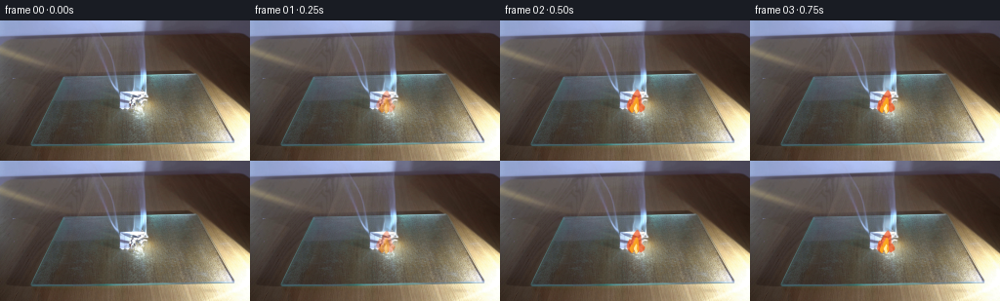

CODING AGENTS AS PIXEL WORLD MODELS
traex/GPT-5.6-Sol · 0140
点击播放 · 原生 RGB 像素
逐轮保存的候选
回放视频、检查图与代码变化。
每份候选均可单独播放。实际图片检查记录在下方工具轨迹中。
候选 01播放与检查图
点击播放 · 原生 RGB 像素


展开代码变化
--- 上一保存版本
+++ 本次保存版本
@@ -0,0 +1,241 @@
+"""Generate a locked-camera shot of folded paper burning on glass.
+
+The supplied photograph is retained as the plate. The only changing pixels are
+the combustion products: a small flame and reflection, progressive charring,
+heat shimmer, and a continuously advected plume of pale smoke. Everything is
+constructed analytically so that rerunning this file is deterministic.
+"""
+
+from pathlib import Path
+
+import cv2
+import numpy as np
+from PIL import Image
+
+import artifact_io
+
+
+HERE = Path(__file__).resolve().parent
+H, W = 144, 256
+
+
+def over(image, color, alpha):
+ """Alpha composite a constant RGB color over a float RGB image."""
+ a = np.clip(alpha, 0.0, 1.0)[..., None]
+ return image * (1.0 - a) + np.asarray(color, np.float32) * a
+
+
+def soft_mask(mask, sigma=0.65):
+ if sigma:
+ mask = cv2.GaussianBlur(mask.astype(np.float32), (0, 0), sigma)
+ return np.clip(mask, 0.0, 1.0)
+
+
+def flame_tongue(X, Y, cx, root, height, width, lean, phase):
+ """An antialiased, slightly asymmetric upward-pointing flame lobe."""
+ u = (root - Y) / height
+ active = (u >= 0.0) & (u <= 1.0)
+ # Narrow at both the paper and the tip, broadest in the lower half.
+ half_width = width * np.maximum(0.018, np.sin(np.pi * np.clip(u, 0, 1))) ** 0.66
+ half_width *= 0.78 + 0.26 * (1.0 - np.clip(u, 0, 1))
+ center = cx + lean * u + np.sin(np.pi * u) * (
+ 0.72 * np.sin(phase + 5.1 * u) + 0.27 * np.sin(phase * 1.7 - 9.0 * u)
+ )
+ d = np.abs(X - center) / (half_width + 1e-3)
+ return np.where(active, np.clip((1.09 - d) * 4.2, 0, 1), 0).astype(np.float32)
+
+
+def make_flame_masks(t, scale=3):
+ """Return outer, yellow, and nearly white flame masks at output size."""
+ hh, ww = H * scale, W * scale
+ yy, xx = np.mgrid[0:hh, 0:ww].astype(np.float32) / scale
+ # Slow changes make motion readable at only four frames per second. The
+ # secondary high-frequency term supplies the characteristic flame flutter.
+ p = 2.10 * t
+ h1 = 20.5 + 3.4 * np.sin(p) + 1.3 * np.sin(4.3 * t)
+ h2 = 13.0 + 2.2 * np.sin(2.7 * t + 1.2)
+ h3 = 10.5 + 2.0 * np.sin(3.4 * t + 3.0)
+ outer = np.maximum.reduce(
+ [
+ flame_tongue(xx, yy, 139.3, 95.0, h1, 6.1, 2.1 * np.sin(1.3 * t), p),
+ flame_tongue(xx, yy, 134.7, 94.5, h2, 4.2, -2.0, p + 2.0),
+ flame_tongue(xx, yy, 144.0, 94.0, h3, 3.4, 1.4, p + 4.1),
+ ]
+ )
+ yellow = np.maximum.reduce(
+ [
+ flame_tongue(xx, yy, 139.2, 95.3, h1 * 0.70, 3.45, 0.7, p + 0.25),
+ flame_tongue(xx, yy, 135.3, 94.7, h2 * 0.61, 2.15, -0.65, p + 1.5),
+ ]
+ )
+ core = flame_tongue(xx, yy, 139.1, 95.6, h1 * 0.43, 1.82, 0.20, p + 0.6)
+
+ def down(a, blur):
+ a = cv2.GaussianBlur(a, (0, 0), blur * scale)
+ return cv2.resize(a, (W, H), interpolation=cv2.INTER_AREA)
+
+ return down(outer, 0.16), down(yellow, 0.12), down(core, 0.10)
+
+
+def build_smoke(t, tex, scale=2):
+ """Build a coherent billowing white-smoke density field.
+
+ Individual puffs are continuously released, rise, spread and meander. A
+ transported low-frequency texture breaks their Gaussian silhouettes into
+ translucent curls without frame-to-frame random flicker.
+ """
+ hh, ww = H * scale, W * scale
+ yy, xx = np.mgrid[0:hh, 0:ww].astype(np.float32) / scale
+ density = np.zeros((hh, ww), np.float32)
+
+ # Release enough closely spaced parcels that the base remains a continuous
+ # thread while older parcels become distinct soft billows.
+ births = np.arange(0.0, t + 0.001, 0.145)
+ for k, birth in enumerate(births):
+ age = t - float(birth)
+ if age < 0 or age > 4.5:
+ continue
+ phase = k * 2.3999632
+ # Faster at first, then buoyant smoke expands and slows slightly.
+ cy = 80.0 - 25.0 * age + 1.15 * age * age
+ cx = 139.0 + 1.35 * age + (1.2 + 1.05 * age) * np.sin(1.18 * age + phase)
+ cx += 0.55 * np.sin(3.3 * age + phase * 0.43)
+ rx = 1.65 + 2.35 * age + 0.23 * age * age
+ ry = 2.7 + 3.00 * age + 0.34 * age * age
+ # Tilt each oval in the direction of its current meander.
+ tilt = 0.18 * np.sin(phase + age)
+ dx = (xx - cx + tilt * (yy - cy)) / rx
+ dy = (yy - cy) / ry
+ puff = np.exp(-1.72 * (dx * dx + dy * dy))
+ grow = min(1.0, age / 0.24)
+ fade = np.exp(-0.16 * max(age - 1.25, 0.0))
+ density += (0.25 + 0.045 * np.sin(phase)) * grow * fade * puff
+
+ # A lighter satellite gives each mature puff a rolled, non-symmetric rim.
+ if age > 0.40:
+ sx = cx + (0.38 * rx) * np.sin(phase + 0.8)
+ sy = cy + 0.25 * ry
+ satellite = np.exp(
+ -2.25 * (((xx - sx) / (rx * 0.68)) ** 2 + ((yy - sy) / (ry * 0.60)) ** 2)
+ )
+ density += 0.085 * fade * satellite
+
+ # Transport a fixed random texture upward. This gives stable detail that
+ # moves with the plume rather than television-like independent noise.
+ map_x = (np.arange(ww, dtype=np.float32)[None, :] + 2.2 * scale * t)
+ map_x = np.broadcast_to(map_x, (hh, ww)).copy()
+ map_y = (np.arange(hh, dtype=np.float32)[:, None] + 7.0 * scale * t)
+ map_y = np.broadcast_to(map_y, (hh, ww)).copy()
+ transported = cv2.remap(tex, map_x, map_y, cv2.INTER_LINEAR, borderMode=cv2.BORDER_REFLECT_101)
+ wave = (
+ 0.78
+ + 0.13 * np.sin(0.115 * xx + 0.176 * yy - 1.10 * t)
+ + 0.09 * np.sin(-0.248 * xx + 0.091 * yy + 1.47 * t)
+ + 0.13 * (transported - 0.5)
+ )
+ density = np.maximum(0, density * wave)
+ density = cv2.GaussianBlur(density, (0, 0), 0.46 * scale)
+ density = cv2.resize(density, (W, H), interpolation=cv2.INTER_AREA)
+
+ # The nonlinear conversion gives a tangible white base and diaphanous edges.
+ alpha = 0.66 * (1.0 - np.exp(-1.48 * density))
+ alpha *= min(1.0, t / 0.60)
+ return np.clip(alpha, 0, 0.63), density
+
+
+def heat_shimmer(base, t):
+ """Very gently refract the plate directly above the flame."""
+ yy, xx = np.mgrid[0:H, 0:W].astype(np.float32)
+ column = np.exp(-((xx - 139.0) / 11.5) ** 2) * np.exp(-((yy - 69.0) / 27.0) ** 2)
+ column *= (yy < 92)
+ dx = column * (0.55 * np.sin(0.27 * yy + 4.4 * t) + 0.22 * np.sin(0.61 * yy - 2.1 * t))
+ dy = column * 0.18 * np.sin(0.33 * xx + 3.0 * t)
+ return cv2.remap(
+ base,
+ xx + dx.astype(np.float32),
+ yy + dy.astype(np.float32),
+ cv2.INTER_LINEAR,
+ borderMode=cv2.BORDER_REFLECT_101,
+ )
+
+
+def generate():
+ plate = np.asarray(Image.open(HERE / "first_frame.png").convert("RGB"), dtype=np.uint8)
+ assert plate.shape == (H, W, 3)
+
+ # Coherent texture for smoke, generated once with a fixed seed.
+ rng = np.random.default_rng(140)
+ smoke_scale = 2
+ tex = rng.random((H * smoke_scale, W * smoke_scale), dtype=np.float32)
+ tex = cv2.GaussianBlur(tex, (0, 0), 3.2)
+ tex = (tex - tex.min()) / (tex.max() - tex.min() + 1e-6)
+
+ yy, xx = np.mgrid[0:H, 0:W].astype(np.float32)
+ frames = []
+ for index in range(20):
+ if index == 0:
+ # Contract requirement: this must remain byte-for-byte identical.
+ frames.append(plate.copy())
+ continue
+
+ t = index / 4.0
+ ramp = min(1.0, t / 0.55)
+ image = heat_shimmer(plate.astype(np.float32), t)
+
+ # The char follows only the visible facets of the folded paper.
+ paper = np.zeros((H, W), np.uint8)
+ cv2.fillPoly(
+ paper,
+ [np.array([(121, 78), (133, 71), (148, 76), (151, 94), (145, 102), (132, 100), (122, 91)], np.int32)],
+ 1,
+ )
+ local_luma = plate.astype(np.float32).mean(axis=2)
+ paper = paper.astype(np.float32) * np.clip((local_luma - 48.0) / 54.0, 0, 1)
+ rx, ry = 3.0 + 0.90 * t, 2.2 + 0.62 * t
+ char_shape = np.exp(-(((xx - 139.2) / rx) ** 2 + ((yy - 91.1) / ry) ** 2) * 1.45)
+ char_texture = 0.72 + 0.18 * np.sin(1.31 * xx + 0.47 * yy) + 0.10 * np.sin(0.38 * xx - 1.17 * yy)
+ char = np.clip(char_shape * char_texture * paper * ramp, 0, 0.82)
+ image = over(image, (37, 28, 24), char * (0.62 + 0.09 * min(t, 3.0)))
+
+ # Intermittent orange cracks around the still-hot charred crease.
+ ember_tex = np.sin(2.41 * xx + 0.91 * yy + 2.8 * t) * np.sin(0.67 * xx - 1.73 * yy)
+ embers = char_shape * paper * (ember_tex > 0.72).astype(np.float32)
+ embers = soft_mask(embers, 0.30) * (0.36 + 0.16 * np.sin(4.0 * t) ** 2) * ramp
+ image = over(image, (242, 80, 19), embers)
+
+ outer, yellow, core = make_flame_masks(t)
+ flicker = 0.88 + 0.12 * np.sin(8.1 * t) ** 2
+
+ # Warm emission and its soft reflection in the glass cutting board.
+ glow = np.exp(-(((xx - 139.5) / 12.0) ** 2 + ((yy - 87.5) / 15.0) ** 2) * 1.55)
+ image = over(image, (255, 108, 25), glow * 0.105 * ramp * flicker)
+ reflection = np.exp(-(((xx - 140.0) / 10.5) ** 2 + ((yy - 108.0) / 14.5) ** 2) * 1.65)
+ reflection *= np.clip((yy - 96.0) / 7.0, 0, 1)
+ reflection *= 0.070 * (0.72 + 0.28 * np.sin(3.7 * t + 0.5) ** 2) * ramp
+ image = over(image, (241, 117, 38), reflection)
+
+ image = over(image, (238, 66, 9), outer * 0.77 * ramp * flicker)
+ image = over(image, (255, 176, 28), yellow * 0.88 * ramp)
+ image = over(image, (255, 246, 174), core * 0.90 * ramp)
+
+ # Smoke is composited last, as it curls in front of the upper flame.
+ smoke_alpha, smoke_density = build_smoke(t, tex, smoke_scale)
+ # Denser smoke is warm-gray at its underside, thin smoke catches cool light.
+ smoke_rgb = np.empty((H, W, 3), np.float32)
+ cool = np.clip(0.30 + smoke_density * 0.45, 0, 1)
+ smoke_rgb[..., 0] = 225.0 + 13.0 * (1.0 - cool)
+ smoke_rgb[..., 1] = 228.0 + 11.0 * (1.0 - cool)
+ smoke_rgb[..., 2] = 227.0 + 12.0 * (1.0 - cool)
+ a = smoke_alpha[..., None]
+ image = image * (1.0 - a) + smoke_rgb * a
+
+ frames.append(np.clip(np.rint(image), 0, 255).astype(np.uint8))
+
+ frames = np.stack(frames, axis=0)
+ assert np.array_equal(frames[0], plate)
+ return frames
+
+
+if __name__ == "__main__":
+ artifact_io.save(generate(), HERE)
+
可观测工具轨迹
实际执行的命令与返回图片。
命令 1exit 0
/bin/bash -lc "cat prompt.txt && printf '\\n---RULES---\\n' && cat GENERATION_RULES.md"
命令 2exit 0
/bin/bash -lc "find . -maxdepth 2 -type f -printf '%p %s bytes\\n' | sort"
命令 3exit 0
/bin/bash -lc "python3 - <<'PY'
from PIL import Image
import numpy as np
im=np.array(Image.open('first_frame.png').convert('RGB'))
print(im.shape, im.min((0,1)), im.max((0,1)), im.mean((0,1)), im.std((0,1)))
# rows/cols mean
for y in range(0,144,12): print('row',y, np.round(im[y:y+12].mean((0,1))).astype(int), np.round(im[y:y+12].std((0,1))).astype(int))
# color quantize top bins
q=(im//16).reshape(-1,3)
u,c=np.unique(q,axis=0,return_counts=True)
for i in np.argsort(c)[-25:][::-1]: print(c[i],u[i]*16)
PY"命令 4exit 0
/bin/bash -lc "python3 - <<'PY'
from PIL import Image
import numpy as np, cv2
I=np.array(Image.open('first_frame.png').convert('RGB'))
# patches 16x12 mean luminance and saturation-ish, chars
L=I.mean(2)
for sy,sx in [(6,8),(4,4),(2,2)]:
print('\\nblocks',sx,sy)
for y in range(0,144,sy):
s=''
for x in range(0,256,sx):
v=L[y:y+sy,x:x+sx].mean()
s+=' .:-=+*#%@'[min(9,int(v/256*10))]
print(s)
if sy==4: break
# masks bbox/components
for name,m in [('white',(I.min(2)>220)),('bright',(L>180)),('blue',((I[:,:,2]-I[:,:,0]>35)&(I[:,:,2]>110))),('orange',((I[:,:,0]>140)&(I[:,:,0]>I[:,:,1]*1.15)&(I[:,:,1]>I[:,:,2]*1.3))),('dark',(L<55))]:
n,lab,st,cent=cv2.connectedComponentsWithStats(m.astype('uint8'),8)
print('\\n',name,m.sum(), 'bbox all', (np.where(m)[1].min(),np.where(m)[0].min(),np.where(m)[1].max(),np.where(m)[0].max()) if m.any() else None)
for j in np.argsort(st[1:,4])[-12:][::-1]+1:
if st[j,4]>=3: print(st[j].tolist(),cent[j].round(1).tolist())
PY"命令 5exit 0
/bin/bash -lc "python3 - <<'PY'
from PIL import Image
import numpy as np
I=np.array(Image.open('first_frame.png').convert('RGB')).astype(int)
# chars 2x2 average central
for y in range(30,116,2):
s=''
for x in range(90,181,2):
p=I[y:y+2,x:x+2].mean((0,1)); r,g,b=p; L=p.mean(); S=max(p)-min(p)
if L>230:c='W'
elif L>195:c='w'
elif L>160:
if b-r>25:c='B'
elif r-b>25:c='Y'
else:c='o'
elif L>125:
if b-r>25:c='b'
elif r-b>25:c='y'
else:c='+'
elif L>95:
if b-r>20:c='c'
elif r-b>20:c='n'
else:c='-'
elif L>65:c='.'
elif L>40:c=','
else:c=' '
s+=c
print(f'{y:3}',s)
PY"命令 6exit 0
/bin/bash -lc "python3 - <<'PY'
from PIL import Image
import numpy as np
I=np.asarray(Image.open('first_frame.png')).astype(float)
# 4x4 map full, define levels by lum and color differences
for y in range(0,144,4):
s=''
for x in range(0,256,4):
p=I[y:y+4,x:x+4].mean((0,1));r,g,b=p; l=p.mean()
if l<45:c=' '
elif l<70:c='.'
elif l<95:c=':'
elif l<120:c='-'
elif l<150:c='+'
elif l<185:c='*'
elif l<220:c='#'
else:c='@'
# hue upper-case modifier symbols
if b-r>35 and l>80:c={'-':'c','+':'C','*':'B','#':'D','@':'E',':':'~'}.get(c,c)
elif r-b>45 and l>80:c={'-':'n','+':'N','*':'Y','#':'O','@':'Q',':':'r'}.get(c,c)
s+=c
print(f'{y:3} {s}')
PY"命令 7exit 0
/bin/bash -lc "python3 - <<'PY'
from PIL import Image
import numpy as np, colorsys
I=np.asarray(Image.open('first_frame.png'))[:,:,:3]
for y in range(0,144,8):
print('\\ny',y)
for x in range(0,256,8):
p=I[y:y+8,x:x+8].mean((0,1)).astype(int)
if x>=96:
print(f'{x}:{p[0]:02x}{p[1]:02x}{p[2]:02x}',end=' ')
print()
PY"命令 8exit 0
/bin/bash -lc "python3 - <<'PY'
from PIL import Image
import numpy as np
I=np.asarray(Image.open('first_frame.png'))[:,:,:3].astype(int)
# Print RGB and hue class around right flame 195:255,55:110 2 px
for y in range(54,111,2):
s=''
for x in range(190,256,2):
p=I[y:y+2,x:x+2].mean((0,1));r,g,b=p;l=p.mean();
if l<45:c=' '
elif l<70:c='.'
elif l<95:c=':'
elif l<125:c='-'
elif l<155:c='+'
elif l<190:c='*'
elif l<225:c='#'
else:c='@'
if r-g>25 and r>b*1.3:c='R'
elif r-b>40 and r>g*1.08:c='O'
elif r-b>35:c='Y'
elif b-r>35:c='B'
s+=c
print(f'{y:3}',s)
PY"命令 9exit 0
/bin/bash -lc "sed -n '1,240p' artifact_io.py && python3 - <<'PY'
import cv2,numpy as np
from PIL import Image
I=np.array(Image.open('first_frame.png').convert('RGB'))
# Canny/edge coords central; connected segments contours grayscale bright around x100-180
G=cv2.cvtColor(I,cv2.COLOR_RGB2GRAY)
for th in [120,150,180,210]:
m=(G>th).astype(np.uint8)
cs,_=cv2.findContours(m,cv2.RETR_LIST,cv2.CHAIN_APPROX_SIMPLE)
print('th',th)
for c in sorted(cs,key=cv2.contourArea,reverse=True)[:10]:
x,y,w,h=cv2.boundingRect(c); a=cv2.contourArea(c)
print(a,(x,y,w,h))
PY"命令 10exit 0
/bin/bash -lc "python3 - <<'PY'
import cv2, numpy as np
from PIL import Image
I=np.asarray(Image.open('first_frame.png'))[:,:,:3]
g=cv2.cvtColor(I,cv2.COLOR_RGB2GRAY)
e=cv2.Canny(g,60,130)
lines=cv2.HoughLinesP(e,1,np.pi/180,threshold=12,minLineLength=10,maxLineGap=4)
for l in sorted(lines[:,0].tolist(), key=lambda a:(a[1]+a[3])/2):
x1,y1,x2,y2=l
if 70<max(x1,x2) and min(x1,x2)<230:
print(l, 'len',round(np.hypot(x2-x1,y2-y1),1),'ang',round(np.degrees(np.arctan2(y2-y1,x2-x1)),1))
PY"命令 11exit 0
/bin/bash -lc "python3 generate.py && python3 - <<'PY'
from PIL import Image
import numpy as np
I=np.array(Image.open('first_frame.png').convert('RGB'))
F=np.stack([np.array(Image.open(f'frames/{i:02}.png')) for i in range(20)])
print('shape',F.shape,F.dtype,'frame0 exact',np.array_equal(F[0],I))
for i in range(20):
d=np.abs(F[i].astype(int)-I.astype(int));
print(i,'changed',np.any(d,2).sum(),'mean',d.mean().round(2),'max',d.max(),'bbox', end=' ')
m=np.any(d>3,2)
if m.any(): print((np.where(m)[1].min(),np.where(m)[0].min(),np.where(m)[1].max(),np.where(m)[0].max()))
else: print(None)
PY
ls -lh pixels.npz inspection.png index.html"命令 12exit 0
/bin/bash -lc "python3 - <<'PY'
from PIL import Image
import numpy as np
for fi in [0,1,4,8,12,16,19]:
I=np.array(Image.open(f'frames/{fi:02}.png')).astype(float)
print('\\nFRAME',fi)
for y in range(0,122,3):
s=''
for x in range(105,176,2):
p=I[y:y+3,x:x+2].mean((0,1));r,g,b=p;l=p.mean()
if l<45:c=' '
elif l<70:c='.'
elif l<95:c=':'
elif l<125:c='-'
elif l<155:c='+'
elif l<190:c='*'
elif l<225:c='#'
else:c='@'
if r-g>35 and r>b*1.35:c='R'
elif r-b>55 and r>g*1.08:c='O'
elif r-b>35:c='Y'
elif b-r>45:c='B'
s+=c
print(f'{y:3}',s)
PY"命令 13exit 0
/bin/bash -lc "python3 - <<'PY'
from PIL import Image
import numpy as np
F=np.stack([np.array(Image.open(f'frames/{i:02}.png')).astype(int) for i in range(20)])
for i in range(1,20):
d=np.abs(F[i]-F[i-1]);print(i,round(d.mean(),3),np.any(d>3,3 if False else 2).sum(), np.percentile(d,[90,95,99,99.9]).round(1))
PY
python3 -m py_compile generate.py
# verify output packed dimensions
python3 - <<'PY'
import numpy as np
z=np.load('pixels.npz')['pixels']; print('packed tensor',z.shape,z.dtype)
PY"保存候选 1 份；完成命令 13 次；可验证图片返回 0 张。原始 API 响应与完整日志保留在本地。